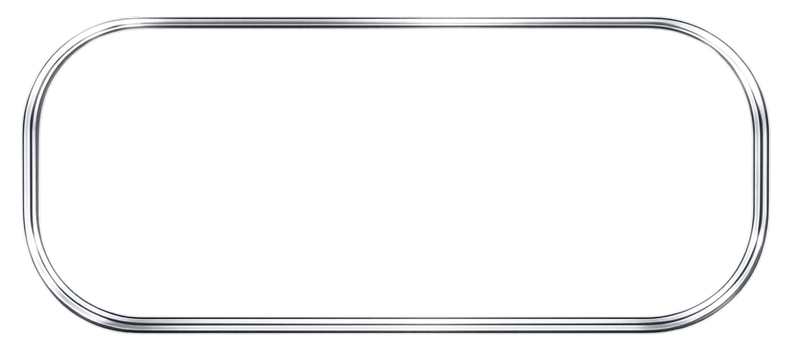
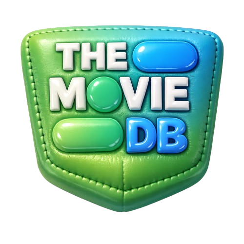

ProjectMovie API
Movie Search Web App
외부 영화 API를 활용해 영화 정보를 검색하고 확인할 수 있도록 제작한 웹 애플리케이션입니다. 비동기 데이터 처리와 동적 렌더링을 경험하는 데 초점을 두었으며, 사용자가 필요한 정보에 빠르게 접근할 수 있도록 UI를 단순화했습니다.
작업기간
2025.11 ~ 2025.11
TOOLS



기여도
100%